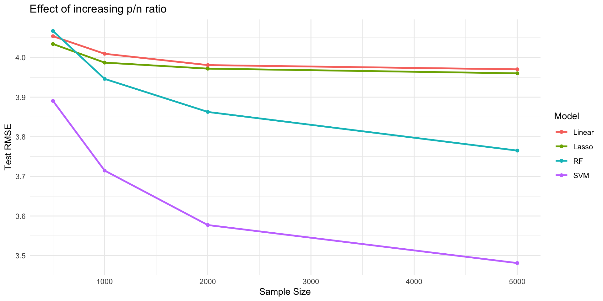
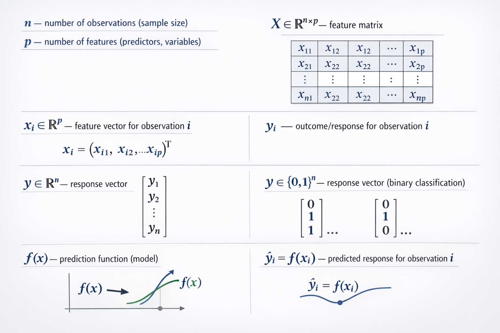
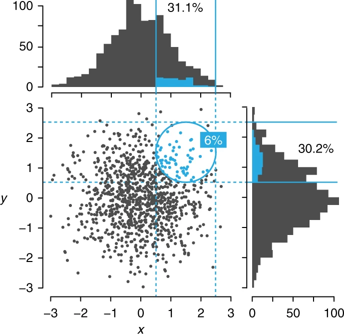
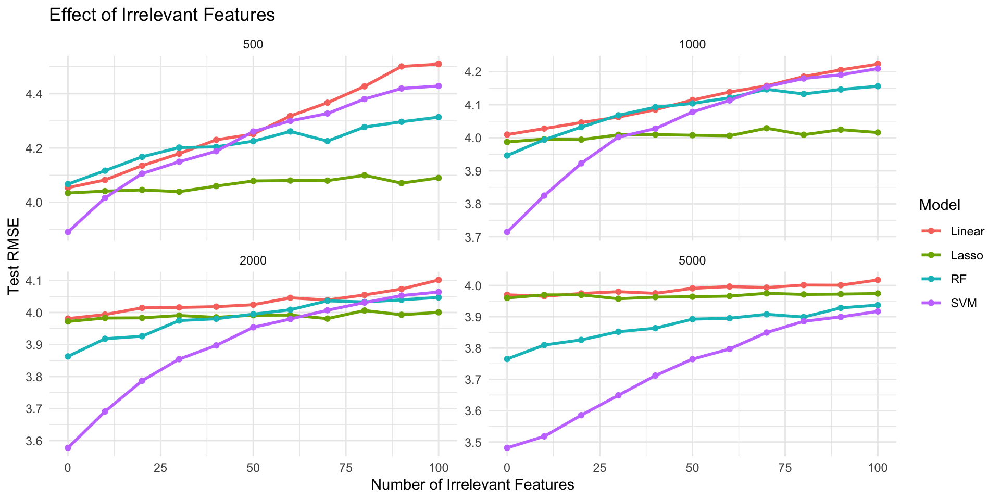
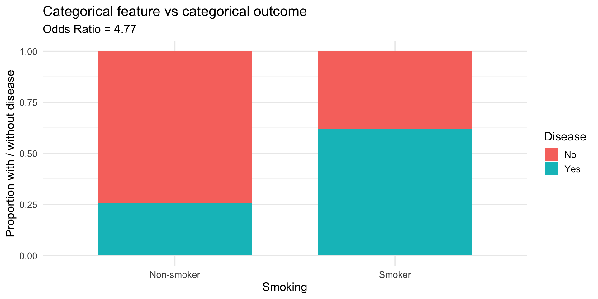
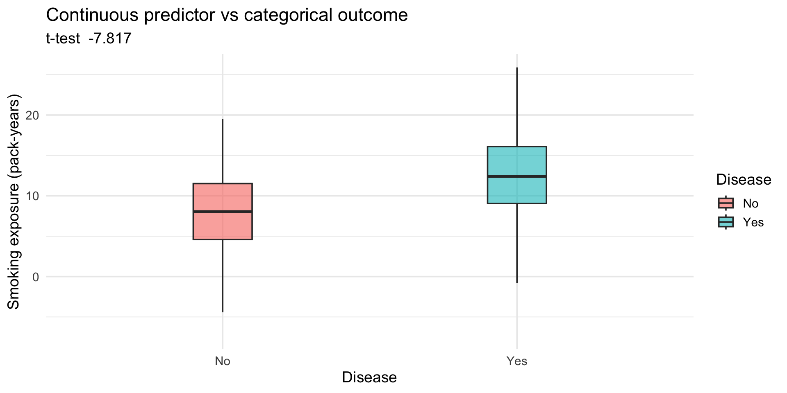
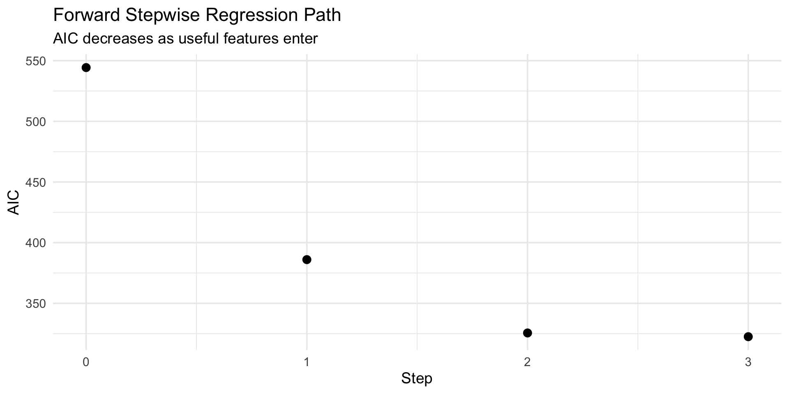
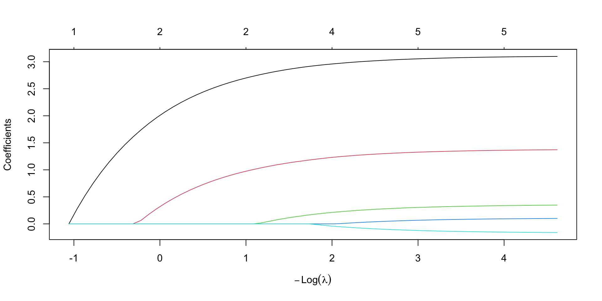
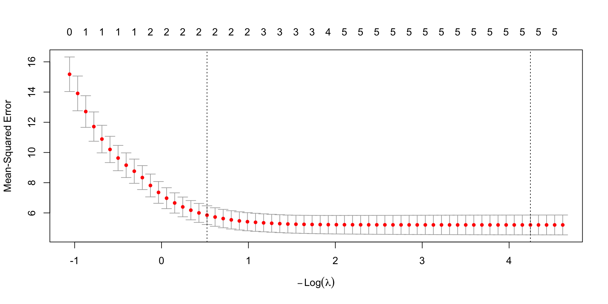
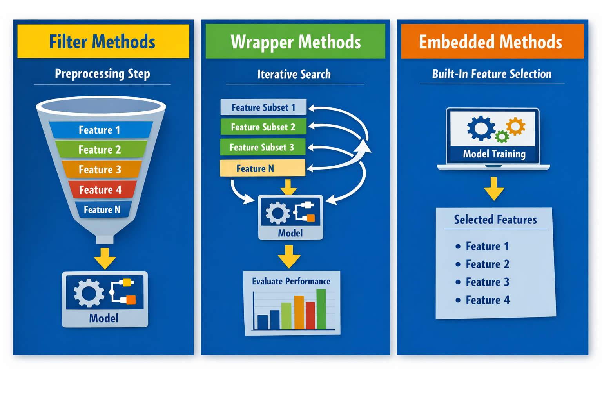

2027-09-04
link to github {.center}
Copyright © 2026 Solon Karapanagiotis – This presentation and its contents may not be shared, copied, or redistributed without permission.
By the end of the session, students will be able to:

A common definition is
Feature selection is the process of selecting a subset of (relevant) features (covariates, predictors) from a dataset to use in model construction. - adapted from wikipedia.
Feature selection is the process of selecting a subset of the features that has the best predictive ability.
… and is interpretable.
Feature extraction creates new features from functions of the original features, whereas feature selection finds a subset of the features.
Feature selection maintains the meaning of the features and gives models better interpretability.
Feature extraction = create new features from data (eg PCA)
Feature selection = choose a subset of existing features
Selecting a subset of input features that
Two main problems:

Among 1,000 (x, y) points in which both x and y are normally distributed with a mean=0 and s.d = 1, only 6% fall within 1 of (x, y) = (1.5, 1.5) (blue circle). However, when the data are projected into a lower dimension—shown by histograms—about 30% of the points (all bins within blue solid lines) are within 1 of 1.5. Blue bins in histograms correspond to the blue points.

Simulation setting
For details see Practical 1
Two main problems:
High dimensionality.
Model intepretability. It is often the case that some or many of the features are not associated with the outcome. Including such irrelevant (or redundant) features leads to unnecessary complexity in the resulting model. By removing these variables—that is, by setting the corresponding coefficient estimates to zero—we can obtain a model that is more easily interpreted.

Simulation setting
Reduce the number of features as far as possible without compromising predictive performance.
Practical 1
A feature selection method (algorithm or strategy) can be seen as the combination of a search technique for proposing new feature subsets, along with an evaluation measure which scores the different feature subsets.
There are three main families of methods:
Key idea: conduct an initial supervised analysis of the features to determine which are (most) important and then only provide these to the model. Rely on statistical relationships between features and the outcome.
A few examples are:
When the outcome is categorical, the relationship between the predictor and outcome forms a contingency table.
When there are exactly two classes for the feature, the odds-ratio (OR) is a choice.
OR calculation:
\[ OR = \frac{\frac{a}{b}}{\frac{c}{d}} = \frac{a d}{b c}\]
Disease No Disease
Smoker "a" "b"
Non-Smoker "c" "d" Contingency table - counts
No Yes
Non-smoker 131 45
Smoker 47 77OR = 4.769267Interpretation:
OR = 1 → no association
OR > 1 → smoking increases odds of disease
OR < 1 → protective effect

t.test()) can be used to generate a statistic.
Welch Two Sample t-test
data: SmokingExposure by Disease
t = -7.8166, df = 294.38, p-value = 9.702e-14
alternative hypothesis: true difference in means between group No and group Yes is not equal to 0
95 percent confidence interval:
-5.970971 -3.569016
sample estimates:
mean in group No mean in group Yes
7.880109 12.650102 
Which statistical test or evaluation approach is appropriate in each of the following situations, and briefly explain why:
Pros:
Cons:
Key idea: Evaluate subsets of features by training a model. They use iterative search procedures that repeatedly supply feature subsets to the model and then use the resulting model performance estimate to guide the selection of the next subset to evaluate.
In practice, need to define:
Examples:
stats::step())Akaike information criterion (AIC) is an estimator of prediction error:
\[ \mathrm {AIC} \,=\,2k-2\ln({\hat {L}})\]
k is the number of estimated parameters in the model, and \(\hat{L}\) is the maximized value of the likelihood function for the model.
Thus, AIC rewards goodness of fit (as assessed by the likelihood function), but it also includes a penalty that is an increasing function of the number of estimated parameters.
Using step():
Start: AIC=544.32
y ~ 1
Df Sum of Sq RSS AIC
+ x1 1 1659.78 1350.8 386.03
+ x2 1 320.32 2690.3 523.82
<none> 3010.6 544.32
+ x5 1 7.92 3002.7 545.79
+ x3 1 7.49 3003.1 545.82
+ x4 1 2.31 3008.3 546.16
Step: AIC=386.03
y ~ x1
Df Sum of Sq RSS AIC
+ x2 1 362.27 988.56 325.59
+ x3 1 15.76 1335.07 385.68
<none> 1350.83 386.03
+ x4 1 11.67 1339.16 386.30
+ x5 1 0.53 1350.30 387.95
Step: AIC=325.59
y ~ x1 + x2
Df Sum of Sq RSS AIC
+ x3 1 24.7194 963.84 322.52
<none> 988.56 325.59
+ x5 1 7.2686 981.29 326.11
+ x4 1 3.6802 984.88 326.84
Step: AIC=322.52
y ~ x1 + x2 + x3
Df Sum of Sq RSS AIC
<none> 963.84 322.52
+ x5 1 6.6265 957.21 323.14
+ x4 1 3.0482 960.79 323.89
Call:
lm(formula = y ~ x1 + x2 + x3, data = df)
Residuals:
Min 1Q Median 3Q Max
-5.545 -1.589 -0.091 1.307 6.811
Coefficients:
Estimate Std. Error t value Pr(>|t|)
(Intercept) 0.05714 0.15705 0.364 0.7164
x1 3.11357 0.16682 18.664 < 2e-16 ***
x2 1.37383 0.15812 8.689 1.45e-15 ***
x3 0.36597 0.16323 2.242 0.0261 *
---
Signif. codes: 0 '***' 0.001 '**' 0.01 '*' 0.05 '.' 0.1 ' ' 1
Residual standard error: 2.218 on 196 degrees of freedom
Multiple R-squared: 0.6799, Adjusted R-squared: 0.675
F-statistic: 138.7 on 3 and 196 DF, p-value: < 2.2e-16
Pros:
Cons:
Key idea: Feature selection happens during model training. In this case, the model itself decides which features are important.
A few examples are:
Linear regression seeks to find the coefficients \(\beta_1, \ldots, \beta_p\) that minimize the sum of the squared distances (or error) from the estimated prediction of the samples to the observed values of the samples:
\[ SSE = \sum^n_{i=1}(y_i - \hat{y}_i)^2\] \[ \hat{y}_i = \hat{\beta}_1 x_1 + \hat{\beta}_2 x_2 + \ldots + \hat{\beta}_p x_p\]
Problems:
Instead minimise:
\[ SSE_{lasso} = \sum^n_{i=1}(y_i - \hat{y}_i)^2 + \lambda \sum^p_{j=1} |\beta_j|\]
Dataset with 5 features.
This shows how coefficients shrink toward zero as penalty increases.

(Mean-squared (prediction)) error using 10-fold cross-validation:
6 x 1 sparse Matrix of class "dgCMatrix"
lambda.1se
(Intercept) 0.08973147
x1 2.45404664
x2 0.74194418
x3 .
x4 .
x5 . 
Pros:
Cons:

Practical 2
Overfitting
Suppose a model has five features (A–E), each with an importance score derived from the training set (A = most important, E = least important). Using backward selection:
The previous slide described an inappropriate resampling scheme.
Two main problems with this procedure:
Since the feature selection is external to the resampling, resampling cannot effectively measure the impact (good or bad) of the selection process.
The same data are being used to measure performance and to guide the direction of the selection routine. This is analogous to fitting a model to the training set and then re-predicting the same set to measure performance. There is an obvious bias that can occur if the model is able to closely fit the training data.
A better way:
Practical 3